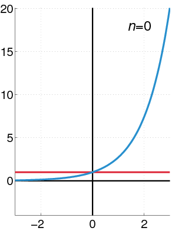

Week 3 and 4: 2nd-order ODE#
The 2nd-order ODE is defined as an ordinary differential equation involving the second order derivative, perhaps the first but no third or higher order derivatives. In general, the 2nd-order ODE shares the following form,
where \(p(x)\), \(q(x)\) and \(f(x)\) can be 0. When \(f(x)=0\), we call it homogeneous problem. Different from the homogeneous problem in 1st-order ODE, it has another meaning here. In a differential equation, \(f(x)\) can usually be considered as a forcing term. A lot of time, the forcing can be localized. Now you can imagine why \(f(x)=0\) is called homogeneous. For example, if we have a warm SST associated with ENSO, what kind atmospheric response we will get? In this case, the forcing, \(f(x)=0\), is the warm SST and the atmospheric response is \(y\). Another example is, if today we have a wok with a heat source (e.g., stove fire) sitting right below it, what kind temperature response will we have? In this case, the fire is the external forcing \(f(x)\) and the temperature is the response \(y(x)\).
Similar to the 1st-order, in a 2nd-order ODE problem, we need at least 2 initial conditions (boundary conditions, i.e., (28)) for \(y\) and \(y^{'}\) to find the particular solution. Otherwise, we can only find general solutions.
For the examples above, the boundary condition of the Earth atmosphere is how much heat was taken by the ocean or emitted to the space through radiation. Of course, all of these problems are way more complicated (we will talk a bit when at the chapter of special function).
In the following section, we will walk through some fundamental characteristics/theorems of 2nd-order ODE.
Some Basic Theorems of 2nd-order ODE#
Theorem 1: The Existence of Solutions of an Initial Value Problem#
For a 2nd-order ODE, like (27), which has \(p(x)\), \(q(x)\) and \(f(x)\) continuous on an open interval \(I\) (the initial/boundary conditions are included in this interval), the solutions have some very important properties:
Properties
(1) The combinations of two solutions is still an solution.
(2) A constant multiple of the solution is still an solution. (and is considered as the same solution)
One can easily find that it shares some similarity with linear function. Indeed, when (27) is linear, both properties above are also hold.
Theorem 2: The Uniqueness of Solutions of Initial Value Problems and Wronskian Test for Independence#
However, for a 2nd-order ODE, at least two solutions are required to completely solve the problem. i.e., we can use a set of solution like \(y(x)=\) and \(y'(x)=\), to represent the given system or using \(y_1(x)=\) and \(y_2(x)=\) as an alternative set of solution. One classic example is the harmonic oscillation. We can use location （displacement), x, and velocity, \(dx/dt\), to describe the current state of a particle. An alternative way to describe harmonic oscillation is using circular motion, where we have two linear independent coordinates \(\mathbf{x}=[x_i\hat{i},x_j\hat{j}]\)
One key point is: \(y_1\) and \(y_2\) should be linearly independent. According to linear algebra, we know we can calculate the cross product to test if two solutions are linearly independent. For \(y_1\) we can consider its first and second coordinates as \(y_1\) and \(y^{'}_1\) and so does \(y_2\).
\(W[y_1,y_2](x)\) is the Wronskian of two functions, \(y_1\) and \(y_2\). If two solutions are independent, their cross product or Wronskian, i.e., the area spanned by two solutions, should be a non-zero value. We will walk through the details about Wronskian later, including how does it server as an additional constrain, which enables us to find the solution.
Theorem 3: General and Particular Solutions#
The third theorem is related to finding particular solutions in an ODE problem. Given that \(p(x)\) and \(q(x)\) are continuous in an open interval \(I\) and \(y_1\) and \(y_2\) are two independent solutions. Then any general solution can be written as the linear combinations of the two solutions. i.e.,
also, we have the initial/boundary values for \(y\)
Using Cramer’s rule, one can find
With the choice of \(y_1\) and \(y_2\), we can find a corresponding \(y\). One should notice that as long as we decide what \(y_1\) and \(y_2\) are, we can find a unique solution of \(y\). One can also find that if \(W[y_1,y_2](x_0)\) equals 0, \(Ay'_2(x_0)-By_2(x_0)=0\) and \(By_1(x_0)-Ay'_1(x_0)=0\) are also required. At the end, this will lead to trivial solution. Therefore, a non-zero Wronskian is very important for finding an unique solution.
Example 1
We know \(e^x\) and \(e^{2x}\) is a solution of
Let the general solution to be the linear combination of \(e^x\) and \(e^{2x}\)
If today we have an initial condition, \(y(0)=-1\) and \(y'(0)=3\). We also know the Wronskian
Using (32), we can find c_1 and c_2
so the final solution will be \(y=-7e^{x}+5e^{2x}\)
From the discussion above, we know how to find general solution along with Wronskian and initial conditions. Now, let’s consider a nonhomogeneous case. Let \(y_p\) to be any solution of the non-homogeneous equation (27). We also have the initial condition of \(y(x_0)=A\) and \(y'(x_0)=B\). Then every particular solution can be written with the following form.
One can easily find that it’s the combination of the homogeneous solution and the given particular solution. This can be proved by defining \(Y(x)=y(x)+y_p(x)\), where \(y(x)\) is the homogeneous solution we mentioned above, and substituting \(Y(x)\) into (27). We can find
and reorganize the equation
given that \(y\) is the solution for homogeneous equation and \(y_p\) is the solution for the nonhomogeneous equation, the entire equation of (34) also equals 0 indicating \(Y\) is also an particular solution for (27).
Example 2
For a given equation \(y^{"}+4y=8x\), we know there is one particular solution, \(2x\). Using theorem 3, we can find all possible particular solutions.
First, we try to find the general solution of \(y^{"}+4y\). We can assume the solution shares a form of \(ce^{Ax}\) (we will talk a bit more in the section of solving the constant-homogeneous ODE). By substituting \(ce^{Ax}\) into equation \(y^{"}+4y=0\), we can find \(A=\pm2i\), which gives as an general solution of \(ce^{i2x}\)
Then any particular solution can be written as
Categories of 2nd-order ODE#
In this section, we will introduce some widely seen 2nd-order ODEs and the corresponding way to approach it, including (1) Constant Coefficient Homogeneous equation, (2)non-homogeneous ODE, (3) Euler Form, and (4) Series Solution
Forms of ODE
– Constant Coefficient Homogeneous equation: \(y^{''}+Ay^{'}+By=0\) (\(A\) and \(B\) are constant)
– Nonhomogeneous ODE: \(y^{''}+p(x)y'+q(x)y=f(x)\)
– Euler Form: \(x^2y^{''}+xAy'+By=0\), where \(A\) and \(B\) are constant
– Series Solution : \(y^{''}+p(x)y'+q(x)y=f(x)\), \(y=\sum a_i x^{i}\)
Constant Coefficient Homogeneous equation#
For constant coefficient homogeneous equation, all of the equations share the same form:
where \(A\) and \(B\) are constant. One simple way to approach it is assuming that the solution shares a form of \(Ce^{kx}\) where c and k are constant. By substituting the solution into (36) and solve for k, we can find \(k=\frac{-A\pm\sqrt{A^2-4B}}{2}\). According to the root of \(k\), we can further categorize the solutions into three different types (1) different but real roots, (2) repeated roots, and (3) complex roots.
Case I: Different but Real Roots#
This is the simplest case, where the solution is written as
To test if two solutions are linearly independent, we can use Wronskian.
Case II: Repeated Roots#
For the case of repeated roots, if we apply the same Wronskian test, we will find that the two solutions are linearly dependent, suggesting we need to find another solution. A simple way to do that is assuming the second solution has a form of
Readers can use (38) and walk through Wronskian all over again and see if the answer changes this time.
Case III: Complex Roots#
The third case is similar to the first case where we have two different roots but both of them are complex (and they are complex conjugates). In this case, we have the same set of solution as the first cases.
where \(\alpha=-\frac{A}{2}\) and \(\beta = \frac{\sqrt{4B-A^2}}{2}\). We can go one step further using Euler identify to rewrite (39)
this will lead to
where \(c_3=c_1+c_2\) and \(c_4=i(c_1-c_2)\)
Nonhomogeneous Equation#
To solve a nonhomogeneous 2nd-order ODE (i.e., \(f(x)\) term exists), we can leverage two methods (1) principle of superposition and (2) Variation of Parameters. Before we introduce Principle of superposition, we can first observe if \(f(x)\) in (27) can be decomposed into the superposition of a few different functions. i.e.,
and \(Y_i\) is the particular solution of the equation \(y^{''}+p(x)y^{'}+q(x)y=f_i(x)\).
principle of superposition then tells us, if today we have a function \(y_p\) which equals to \(\sum_i Y_i\), \(y_p\) is also a particular solution of (27). Based on this rule, we can decompose \(f(x)\) into different pieces which is easier for us to approach.
The second method, variations of parameters, which is a method in combination of the way we solved homogeneous problem and Wronskian. (we will cover more details about how to solve more complicated homogeneous problem than a constant coefficient case but just leave it for convenience at the current stage) For example, if \(y_1\) and \(y_2\) are the solution of the homogeneous form of (27). We can assume that the particular solution has a form
This gives us
For convenience, we will first assume we can find certain \(u_1^{'}\) and \(u^{'}_2(x)\) which makes
Then we take another derivative of (44), which gives us
Then substitute (46) and (44) into (27), we can have
Reorganize equation, we can find
Since both (45) and (48) should hold, this will lead to
where \(W(x)\) is the Wronskian of \(y_1\) and \(y_2\).
Comparing (49) with (32), it is evident that the variation of parameters is using theorem 3 that we introduced above except that the case in theorem 3 has a constant coefficient.
Example 3
Find the general solution of the following equation
Before we solve the differential equation, we can first observe what type of differential equations it is? First, without \(\sec(x)\), it’s a constant coefficient of 2nd-order ODE, which has solution of \(c_1e^{i2x}+c_2e^{i2x}\) (or can be written as \(c_1 \cos(2x)+c_2 \sin(2x)\)).
Now, we can use variation of parameters to find \(c_1\) and \(c_2\) as a function x. First, the Wronskian is
using (49), we can find
Given that \(\sin(2x)=2\sin(x)\cos(x)\) and \(\cos(2x)=2\cos(x)^2-1\), we have
and integrate both sides of the equation above,
substitute \(u_1\) and \(u_2\) back to the general solution, we have
To find all possible general solution, we use theorem 3: the combination of solutions for homogeneous problem and nonhomogeneous problem will be the general solution for any nonhomogeneous problem. Therefore, we have the final solution
There is one special technique, undetermined coefficients, which is usually used along with principle of superposition and theorem 3 (i.e., \(y=y_g+y_p\), where \(y_g\) is the general solution and \(y_p\) is the particular solution). However, different from variation of parameter, it can only be applied to a constant coefficient ODE. The concept behind it is guessing the \(y_p\) based on \(f(x)\).
For example, if today \(f(x)\) evolves a trigonometric function, we can simply guess a particular like \(c_1\cos(kx)+c_2\sin(kx)\). If today \(f(x)\) shares a polynomial form, we can guess a solution of \(Ax^2+B^x+C\). By substitute these particular solution, we can determine the coefficients such as \(c_1\), \(c_2\) or \(A\), \(B\) and \(C\). The readers can see the similarity between undetermined coefficients and variation of parameters. The main difference is that all of the coefficients here is constant instead of a function of x. More details will be covered in chapter of Laplace Transform.
Example 4
Using undermined coefficient to solve the following ODE.
According to undermined coefficients, we can guess a particular solution of \(Ae^{3x}\). Then substitute \(Ae^{3x}\) into the original equation, we have
indicating \(A=\frac{7}{13}\). Now, we have one particular solution, \(\frac{7}{13}e^{3x}\). Also, by inspecting the left hand side of the ODE, we know the solution of the homogeneous problem can be written as
Therefore, the completed solution is
Euler Form#
Euler form is a special case of 2nd-order ODE, where the 2nd-order derivative is multiplied by \(x^2\). i.e.,
where \(A\), and \(B\) are constant. In such case, we can’t apply the same approach that we used for solving a constant coefficient ODE. To transform the equation back to an constant coefficient ODE. We can first assume the solution shares a form of \(y=x^{r}\). This results in
substitute (51) into (50), we will have
Solving for \(r\) in (52), we can find the answer for (50). Similar to a constant coefficient ODE, we will have three different scenarios for \(r\): (1) distinct but real roots, (2) repeated roots, and (3) complex roots.
Case I: Distinct but real roots#
This is the simplest case, where the solution can be directly written as
where \(c_1\) and \(c_2\) are constant. \(r_1\) and \(r_2\) are two roots for (52)
Case II: Repeated Roots#
In the case where we have repeated roots for (52), we can assume the second root has a form of
One can find the similarity in repeated-root case between Euler equation and constant coefficient ODE (see (38)). This can be proofed by using variation of parameters, where we assume the second solution is
Case III: Distinct but Complex Roots#
When we have two complex root, the solution can be written as
as those shown in case I. Here, we can go one step further given that \(e^{a\ln(x)}=x^a\). This leads to
Recall \(r_1\) and \(r_2\) need to be each others’ complex conjugate. Therefore, we can rewrite them into \(r_1=a+ib\) and \(r_2=a-ib\), which results in the final solution of
or
Series Solution#
In the section, we will introduce one of the most powerful and general approaches for solving the ODE, Series Solutions.
Let’s start from what we learn above. For all of the previous ODE categories, we can find many of them share a solution form of \(c_1e^{r_1x}+c_2e^{r_2x}\). Recall the Taylor expansion of an exponent (center around 0, i.e., \(x_0\)=0) can be written as
This implies that most of the ODEs that we introduced above can be represented with a polynomial. Indeed, when we have enough terms in the polynomial, we might be able to find a certain combination of these terms to mimic the solution of an ODE (see figure below). On the other hand, by decomposing the solution into different polynomial terms help us better interpret the results. For example, \(y(x) =4e^{-x^3/3}+e^{-x^3/3}\int^{x}_0e^{\xi^3/3}d\xi\) is the solution of the function \(y^{'}+x^2y=1\), where a closed form doesn’t exist. It’s apparent that understanding this solution is more challenging than analyzing a power series.

Fig. 2 A schematic figure shows how the increase of power series to make a better prediction of a given function. Wikipedia#
To find the series solution of an ODE, we can first assume it has a form of
By substituting (61) into (27), we can find the corresponding coefficient, \(a_n\),of each term in the polynomial.
Example 5
Find the polynomial solution of the following 1st-order ODE.
First, assume the solution has a form of (61). That also implies
Inspect the right hand side of ODE, it can be written as \(\sum x^n\) (if the series converges). Reorganize the entire equation, we have
or
For the term of \(x^0\), we have
For other higher order terms, we have a recurrence relation
and drop the trivial solution \(x=0\), we have a sets of final solution